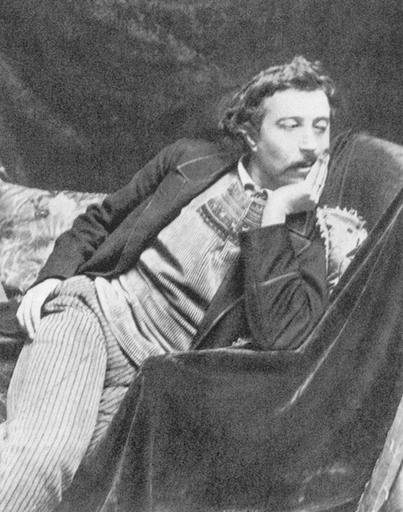

Pintor francés
Paul Gauguin
1848–1903
Fue agente de bolsa hasta los treinta y cinco años y lo dejó todo por pintar. Buscó en Bretaña primero y en Polinesia después una vida que creía anterior a la civilización europea, y construyó allí una obra de color plano y contorno marcado que abrió camino al simbolismo y al fauvismo. Murió en las Marquesas, endeudado y enfermo.